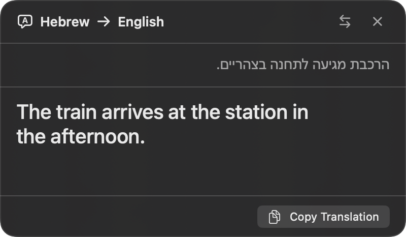

On-device translation for macOS
Translate text
from any Mac app.
Highlight text in a browser, document, or chat and click the purple bubble to translate it right there. You can also copy text and translate it from the menu bar.
Apple silicon · macOS 27 or later

Two languages.
Both directions.
Pick two supported languages. Saman detects the language of the text you select and translates it into the other. You can reverse the direction in the translation window.
Use Settings to choose an English or Hebrew interface, change your language pair, or open Saman at login.

Translate with a shortcut.
Use the shortcut wherever Saman can read your selection. Move the translation window wherever you need it, or copy the result.
Your text stays on your Mac.
Saman translates your text on your Mac using Apple Translation.
Get started on your Mac.
Open Saman
Download the ZIP, unzip it, and open Saman.app. On first launch, Saman can copy itself to Applications.
Choose two languages
Pick the languages you want to translate between. macOS may ask to download the models on first use.
Allow Accessibility
Grant access so Saman can read your selection. Select some text and click the purple bubble, or press ⌥⇧T.
Current release: ad hoc signed, without Apple notarization. If macOS blocks the first launch, follow Apple’s instructions for opening an unnotarized app you trust. Apple’s instructions.
Questions
Why does Saman need Accessibility?
macOS uses that permission to let Saman read selected text and place its bubble beside it. The copied-text command works without it.
What if the bubble doesn’t appear?
Some apps don’t make selection data available through Accessibility. Copy the text, then choose Translate Copied Text from the Saman menu.
Can I build Saman from source?
Yes. The repository contains Saman’s Swift source, build scripts, and contribution instructions. Contribute on GitHub.